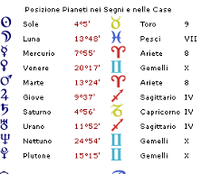
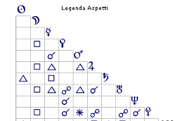

Biografie
Wolfgang Pauli
Vienna, 25 aprile 1900
Wolfgang Pauli nato a Vienna il 25/04/1900 alle ore 13:43
Toro Ascendente Vergine


Wolfgang Pauli: un Genio Diviso
L'analisi del tema natale di Wolfgang Pauli, Premio Nobel per la Fisica, offre un'opportunità straordinaria per comprendere la coesistenza, apparentemente paradossale, di due polarità psichiche ben distinte: da un lato, la mente brillante e rigorosa dello scienziato; dall'altro, un'interiorità tormentata che lo spingeva verso comportamenti trasgressivi e compensatori. Notevole è anche l'interesse di Pauli per la psicologia dell'inconscio — un'inclinazione assai insolita per un fisico teorico — che troverà ampia giustificazione nelle configurazioni del suo tema.
La solidità intellettuale e la capacità di applicazione concreta di Pauli sono immediatamente leggibili nel forte predominio dei segni di Terra: l'Ascendente in Vergine, il Sole in Toro in trigono a Saturno in Capricorno delineano una struttura psichica orientata alla costanza, alla precisione metodica, alla resistenza e alla concretezza operativa. Questa configurazione riflette il classico impianto psicologico dello scienziato rigoroso, capace di sostenere anni di lavoro paziente prima di giungere a formulazioni teoriche definitorie.
In netta tensione dinamica con i valori Terra, si erge una configurazione di Fuoco di notevole potenza: la congiunzione Mercurio-Marte in Ariete in trigono alla congiunzione Giove-Urano in Sagittario. Questo assetto planetario non si limita a conferire fiducia nelle proprie capacità ma genera un'autodeterminazione quasi aggressiva, una tendenza a imporre le proprie idee con sicurezza ai limiti della tracotanza.
Dal punto di vista psicologico, si tratta di una configurazione che produce individualità instancabili, di straordinaria produttività mentale. Il coinvolgimento di Mercurio — pianeta del pensiero e della comunicazione — nell'aspetto di trigono suggerisce che questa vivacità intellettuale si manifesta fin dalla più giovane età. Ed è storico: ancora fanciullo, Pauli mostrava interesse precoce per la fisica nei colloqui con i colleghi del padre; a poco più di vent'anni consegnò un manoscritto sulla teoria della relatività che avrebbe riscosso la stima esplicita di Albert Einstein.
La congiunzione Giove-Urano in Sagittario amplifica ulteriormente le qualità sagittariane del Sole in Toro — già collocato in nona casa — rendendolo un comunicatore di grande efficacia, particolarmente dotato per l'esposizione didattica e la divulgazione scientifica a livello superiore. L'autorevolezza nell'espressione, rafforzata dal trigono Sole-Saturno (con Saturno in Capricorno nel proprio domicilio), si traduce in un magistero riconoscibile e influente.
A questa già poderosa configurazione si aggiunge il sestile Marte-Plutone, che amplifica ulteriormente la grinta e la determinazione, rendendo Pauli praticamente impermeabile alle obiezioni. Nessun contradditore poteva scalfirne le posizioni.
La lettura del Tema Natale è altrettanto eloquente: Giove, simbolo della parola e dell'espansione del sapere, è congiunto a Urano (cosignificante del lavoro e della tecnica scientifica), mentre il Sole in nona casa rimanda all'insegnamento accademico superiore. La cuspide della sesta casa in Acquario, segno in cui ha il domicilio primario Urano, rafforza il legame con la scienza, la tecnologia e — soprattutto — con l'innovazione. È proprio questa vocazione all'innovazione radicale che ha permesso a Pauli di contribuire in modo decisivo alla nascita della meccanica quantistica, con il celebre Principio di Esclusione che gli valse il Premio Nobel nel 1945.
La congiunzione Marte-Mercurio in ottava casa si presta infine a una lettura di particolare raffinatezza: l'ottava casa è il dominio dell'invisibile, di ciò che sfugge alla percezione ordinaria. Essa descrive con precisione simbolica l'attività di Pauli nel mondo subatomico — il regno di ciò che per definizione non può essere osservato a occhio nudo.
Il contrasto tra la brillante personalità pubblica di Pauli e il suo tumultuoso mondo interiore trova la sua spiegazione più profonda nella condizione della Luna. Una Luna in Pesci è già di per sé una posizione di grande sensibilità e permeabilità emotiva, propensa all'empatia ma anche alla confusione dei confini tra sé e l'altro. Ma in questo tema, la Luna è completamente afflitta: in quadratura alla congiunzione Giove-Urano e in quadratura con Plutone. Il risultato è una struttura emotiva che, lungi dall'accudire, tende essa stessa a ricercare accudimento; che oscilla tra idealizzazione e disillusione, tra bisogno di fusione e paura dell'abbandono.
È probabile che tale configurazione rimandi a una ferita primaria legata alla relazione con la madre, una figura che potrebbe non aver saputo rispondere adeguatamente ai bisogni emotivi del figlio. L'afflizione plutoniana della Luna evoca la possibilità che Pauli abbia assorbito le frustrazioni o l'ingenuità materna, sviluppando precocemente un rapporto ambivalente con il femminile e con la propria sfera affettiva.
Il suicidio della madre, evento biograficamente documentato, ha verosimilmente riattivato questa ferita in forma acuta — ed è dopo tale trauma che Pauli inizia il suo straordinario percorso di analisi con Carl Gustav Jung, culminato nella stesura congiunta di Interpretazione della natura e della psiche (1952). La stessa congiunzione Marte-Mercurio in ottava casa, che descrive l'interesse per i processi invisibili della materia, sembra descrivere anche l'impulso a esplorare i processi invisibili della psiche.
La quarta casa — struttura simbolica dell'ambiente familiare d'origine — è occupata da Saturno e dalla congiunzione Giove-Urano: un contesto emotivamente freddo, caratterizzato da rigore, produttività e rispetto delle regole, più che da calore e contenimento affettivo. Urano "uranizza" Giove, privandolo della sua qualità espansiva e benevola per trasformarlo in simbolo di laboriosità distaccata. La Luna governa l'undicesima casa (in Cancro), suggerendo che il suo equilibrio è legato alle dinamiche delle radici familiari — un equilibrio che, data la condizione lunare, appare strutturalmente compromesso. Venere si trova in Gemelli, in posizione mediana tra Plutone e Nettuno. Questa collocazione, letta in chiave psicologica, delinea con chiarezza il profilo delle compensazioni che Pauli cercava alla propria povertà emotiva: la sessualità compulsiva (Venere-Plutone) e l'abuso di alcol (Venere-Nettuno). I Gemelli, con il loro richiamo al gioco, alla molteplicità e al flirt, suggeriscono il contesto specifico: la frequentazione di locali notturni, ambienti di intrattenimento e — stando alle biografie — di case di piacere, di cui Pauli era frequentatore assiduo, tanto da scegliere le proprie sedi di lavoro anche in base alla presenza di tali esercizi nelle vicinanze.
La congiunzione Marte-Mercurio in Ariete — con Marte nel suo segno di domicilio — lascia ipotizzare un precoce risveglio della sessualità, interpretabile come risposta compensatoria alle frustrazioni emotive dell'infanzia. Tale struttura, cristallizzatasi nell'età adulta, si manifesta nelle biografie come una scissione quasi dissociativa tra la vita diurna dello scienziato e la vita notturna dell'uomo in balia dei propri istinti.
Le biografie di Pauli lo ritraggono come un critico spietato, temuto dai colleghi per la durezza dei suoi giudizi. Werner Heisenberg era solito sottoporgli tutti i propri lavori prima della pubblicazione, nella speranza di prevenire le sue devastanti obiezioni. Marte in Ariete — nel proprio domicilio, congiunto a Mercurio — genera una comunicazione combattiva e diretta, in cui ogni scambio intellettuale rischia di trasformarsi in scontro.
Ma la radice psicologica di questo atteggiamento va cercata ancora nella Luna afflitta: la sua condizione in Pesci, bombardata da aspetti ostili, genera un'ipersensibilità alle critiche e un'incapacità strutturale di distinguere l'intenzione benevola dall'attacco. La terza casa in Scorpione introduce un ulteriore colore competitivo nelle relazioni orizzontali; l'undicesima casa in Cancro con il suo dispositore lunare completamente afflitto torna a ricordare il timore cronico di essere ferito, umiliato o tradito dagli altri.
Una curiosità che la storia della fisica ricorda come l'"Effetto Pauli": i macchinari da laboratorio sembravano guastarsi sistematicamente in presenza di Pauli, tanto che il fenomeno divenne proverbiale tra i fisici dell'epoca. In chiave astrologica, la quadratura Giove-Urano alla Luna potrebbe rimandare a un disagio profondo — probabilmente inconscio — nei confronti dei dispositivi meccanici e tecnologici: il pianeta della tecnica per eccellenza (Urano) in tensione con il principio di adattamento all'ambiente (Luna).
Il tema natale di Wolfgang Pauli è una testimonianza di straordinaria coerenza simbolica. I valori Terra e Saturno edificano la struttura razionale, il rigore metodico, la caparbietà scientifica di un Nobel. La Luna in Pesci completamente afflitta descrive il versante oscuro: la ferita emotiva irrisolta, la ricerca compulsiva di compensazione, la sensibilità mascherata sotto un'armatura di sicurezza. Tra questi due poli — il principio di realtà e il principio del piacere, per usare il lessico freudiano — si svolge l'intera esistenza di Pauli: scienziato diurno, uomo notturno; costruttore di principi fisici, prigioniero dei propri fantasmi interiori.